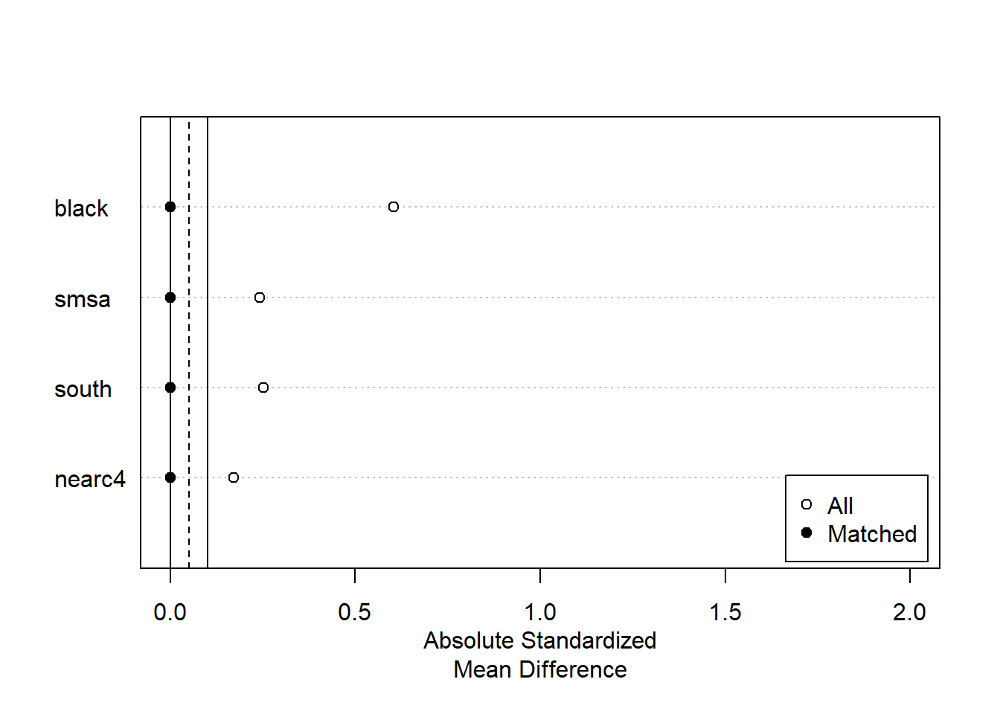
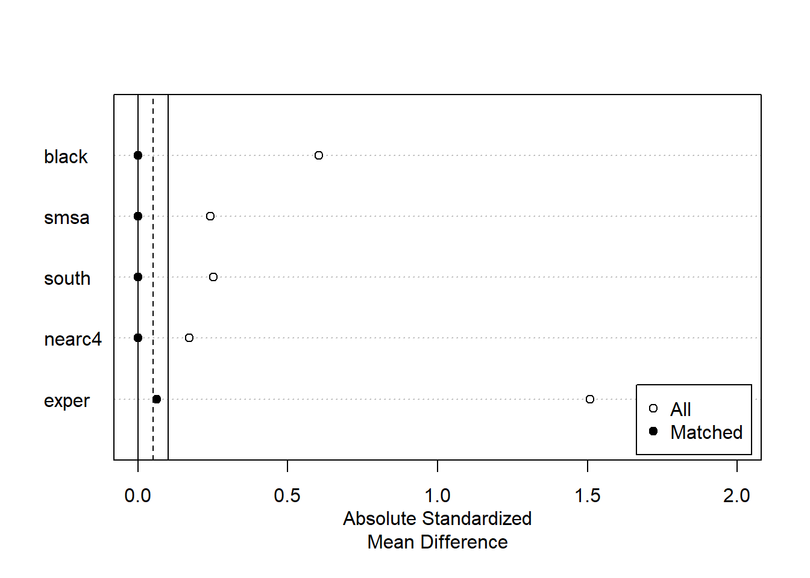

Chapter 7 マッチング推定
- MatchIt (Ho et al. 2020)パッケージを使った実装を紹介
7.1 データ
library(tidyverse)
data("close_college",
package = "causaldata")
raw <- na.omit(close_college)
raw <- mutate(raw,
college = if_else(educ >= 16, 1, 0))
set.seed(111)7.2 パッケージ
library(MatchIt)
library(estimatr)7.3 Exacet Matching
fit.m <- matchit(college ~ black + smsa + south + nearc4,
data = raw,
method = "exact")7.3.1 Balance check
sum.m <- summary(fit.m)
sum.m##
## Call:
## matchit(formula = college ~ black + smsa + south + nearc4, data = raw,
## method = "exact")
##
## Summary of Balance for All Data:
## Means Treated Means Control Std. Mean Diff. Var. Ratio eCDF Mean
## black 0.1005 0.2821 -0.6041 . 0.1816
## smsa 0.7855 0.6863 0.2417 . 0.0992
## south 0.3186 0.4358 -0.2514 . 0.1171
## nearc4 0.7377 0.6626 0.1709 . 0.0752
## eCDF Max
## black 0.1816
## smsa 0.0992
## south 0.1171
## nearc4 0.0752
##
##
## Summary of Balance for Matched Data:
## Means Treated Means Control Std. Mean Diff. Var. Ratio eCDF Mean
## black 0.1005 0.1005 0 . 0
## smsa 0.7855 0.7855 0 . 0
## south 0.3186 0.3186 0 . 0
## nearc4 0.7377 0.7377 0 . 0
## eCDF Max Std. Pair Dist.
## black 0 0
## smsa 0 0
## south 0 0
## nearc4 0 0
##
## Percent Balance Improvement:
## Std. Mean Diff. Var. Ratio eCDF Mean eCDF Max
## black 100 . 100 100
## smsa 100 . 100 100
## south 100 . 100 100
## nearc4 100 . 100 100
##
## Sample Sizes:
## Control Treated
## All 2187. 816
## Matched (ESS) 1789.25 816
## Matched 2182. 816
## Unmatched 5. 0
## Discarded 0. 0plot(sum.m, xlim=c(0,2))
7.3.2 estimation
df <- match.data(fit.m)
lm_robust(lwage ~ college + nearc4 + black + smsa + south,
df,
weights = weights)## Estimate Std. Error t value Pr(>|t|) CI Lower
## (Intercept) 6.18775535 0.01910981 323.800010 0.000000e+00 6.15028566
## college 0.14790683 0.01769910 8.356745 9.741357e-17 0.11320320
## nearc4 0.04530885 0.01742984 2.599499 9.381887e-03 0.01113316
## black -0.19671028 0.01958605 -10.043385 2.294003e-23 -0.23511378
## smsa 0.15289295 0.01814851 8.424547 5.544904e-17 0.11730813
## south -0.12781849 0.01709518 -7.476874 9.941490e-14 -0.16133798
## CI Upper DF
## (Intercept) 6.22522504 2992
## college 0.18261046 2992
## nearc4 0.07948455 2992
## black -0.15830679 2992
## smsa 0.18847776 2992
## south -0.09429900 29927.4 Coarsened exacet Matching
- Coarsened exact matching法 (Iacus, King, and Porro 2012) の実装
fit.m <- matchit(college ~ black + smsa + south + nearc4 + exper,
data = raw,
method = "cem")7.4.1 Balance check
sum.m <- summary(fit.m)
plot(sum.m, xlim=c(0,2))
7.4.2 estimation
df <- match.data(fit.m)
lm_robust(lwage ~ college + nearc4 + black + smsa + south + exper,
df,
weights = weights)## Estimate Std. Error t value Pr(>|t|) CI Lower
## (Intercept) 5.79251503 0.049041257 118.115143 0.000000e+00 5.69634415
## college 0.26131980 0.025191103 10.373496 1.167180e-24 0.21191955
## nearc4 0.02975198 0.025115250 1.184618 2.362938e-01 -0.01949953
## black -0.10263949 0.027794754 -3.692765 2.271158e-04 -0.15714555
## smsa 0.18284260 0.024503808 7.461804 1.212704e-13 0.13479015
## south -0.13568840 0.028082002 -4.831863 1.443863e-06 -0.19075776
## exper 0.04633403 0.005674486 8.165327 5.281568e-16 0.03520625
## CI Upper DF
## (Intercept) 5.88868591 2248
## college 0.31072005 2248
## nearc4 0.07900348 2248
## black -0.04813342 2248
## smsa 0.23089506 2248
## south -0.08061903 2248
## exper 0.05746181 2248